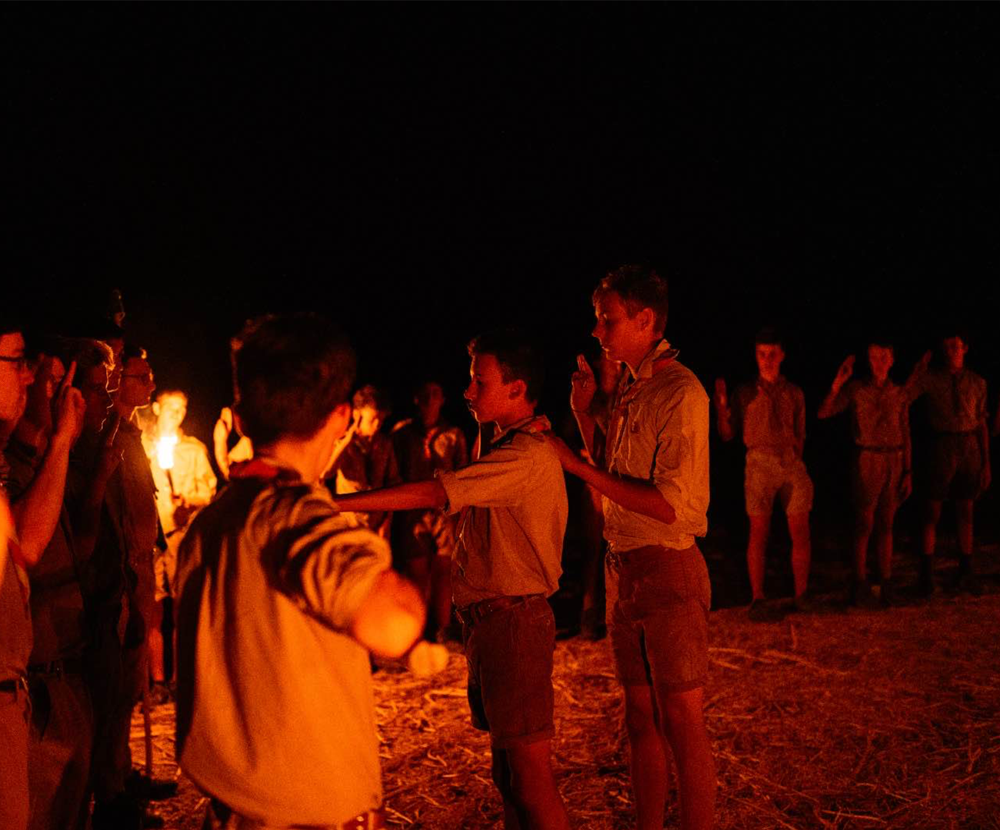
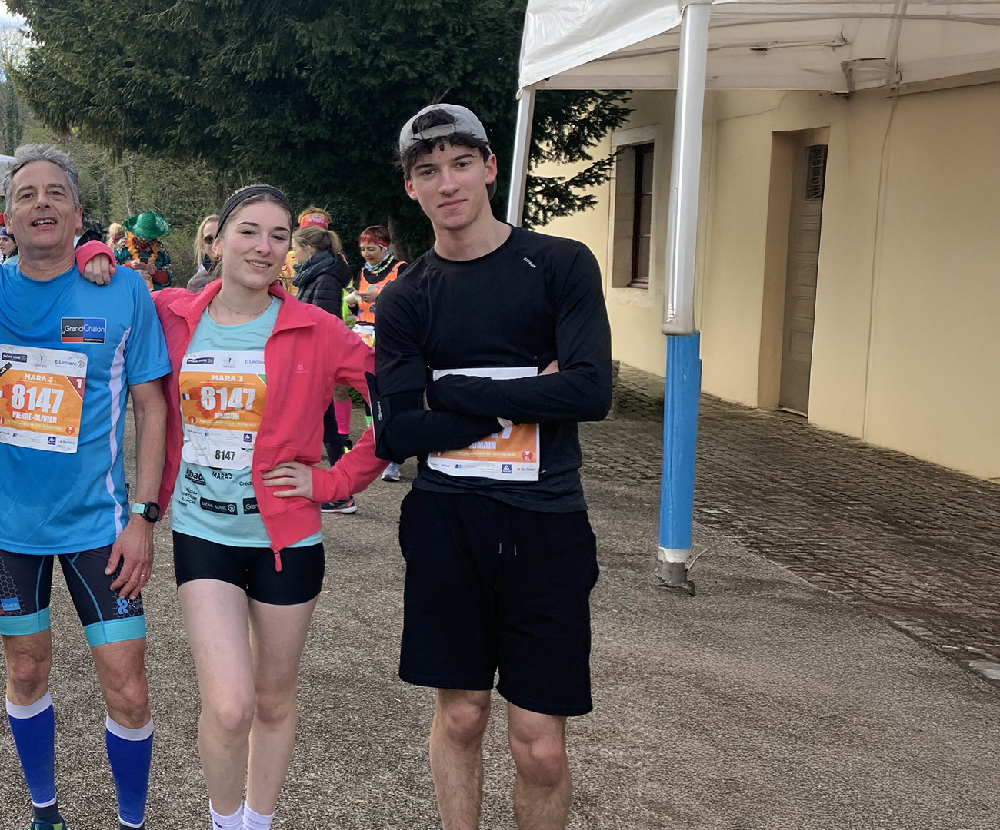
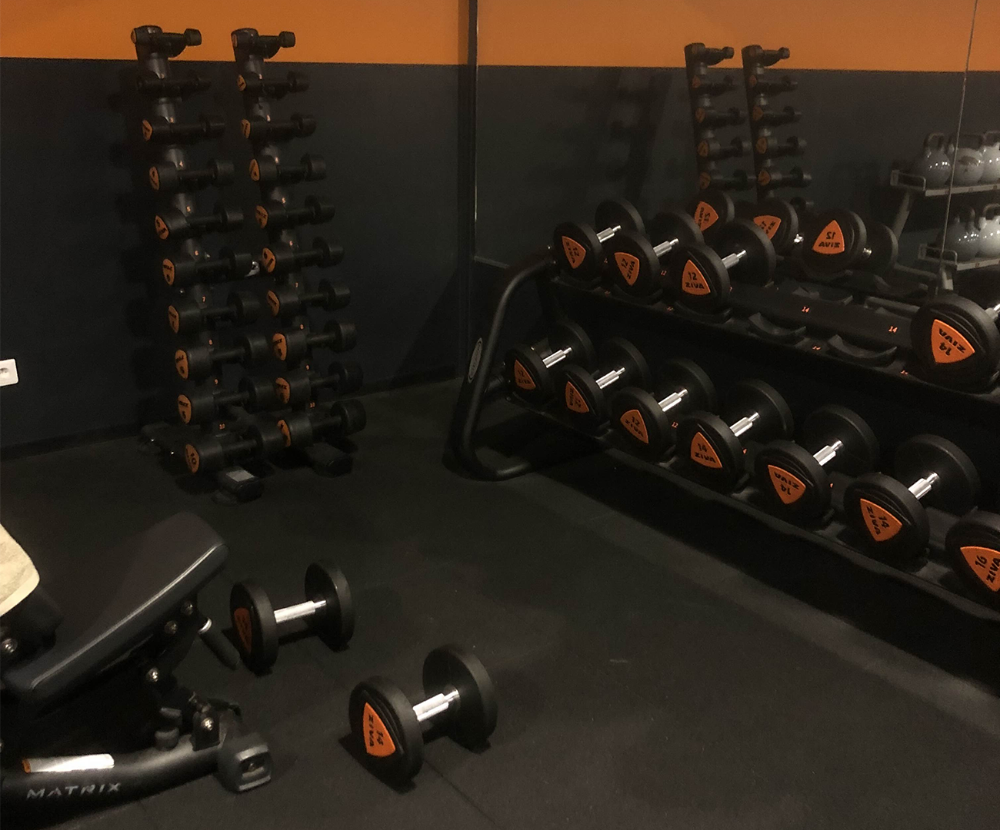

SPORT
En plus d'être programmeur, voici mon parcours sportif

De mes 8 à 15 ans, j'ai été Scout unitaire de France
Cela m'a appris tant de choses : l'esprit d'équipe, le sens du partage, l'écoute des autres, ainsi que la capacité à se débrouiller en pleine nature, etc.
A partir de 16 ans j'ai découvert la course à pied
J’ai commencé en club, mais je cours désormais uniquement en dehors d’un cadre associatif.
La course à pied a toujours été pour moi un moyen de me sentir en bonne santé et de libérer de la dopamine, tout en améliorant mon endurance.


Depuis mes 16 ans, je fais du renforcement musculaire
Mon objectif : prendre du muscle. Je vais à la salle de sport environ trois fois par semaine, et après chaque séance, je me sens extrêmement bien !